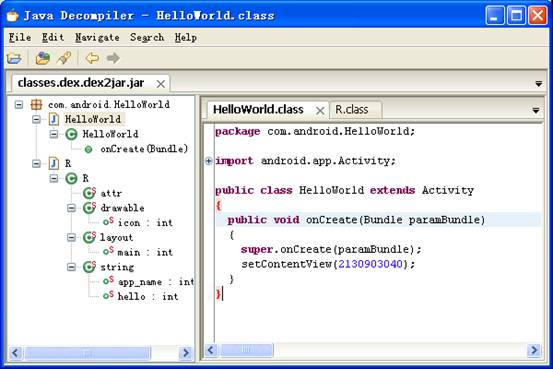

1、 了解掌握Android手机平台。
2、 掌握Android手机平台下软件包的格式与文件构成。
3、 熟练通过分析工具反编译Android软件包，并分析其软件行为。
4、 结合分析软件对目标程序进行分析，完成病毒分析报告。
1、 学会使用分析工具分析一个Android程序。
2、 仔细认真观看相关实验视频，并完成实践。
3、 根据实验内容，回答实验问题。完成拓展训练，写出实验报告。
1、Android
Android一词的本义指“机器人”，同时也是Google于
2、系统简介
Android是基于Linux开放性内核的操作系统，是Google公司在
早期由原名为"Android"的公司开发，谷歌在2005年收购"Android.Inc"后，继续对Android系统开发运营，它采用了软件堆层（software stack，又名软件叠层）的架构，主要分为三部分。底层Linux内核只提供基本功能，其他的应用软件则由各公司自行开发，部分程序以Java编写。
2011年初数据显示，仅正式上市两年的操作系统Android已经超越称霸十年的塞班系统，使之跃居全球最受欢迎的智能手机平台。现在，Android系统不但应用于智能手机，也在平板电脑市场急速扩张，在智能MP4方面也有较大发展。采用Android系统主要厂商包括台湾的HTC,(第一台谷歌的手机G1由HTC生产代工）美国摩托罗拉,SE等，中国大陆厂商如：魅族（M9），华为、中兴、联想、蓝魔等。。
3、编程语言
Android 是运行于 Linux kernel之上，但并不是GNU/Linux。因为在一般GNU/Linux 里支持的功能，Android 大都没有支持，包括Cairo、X11、Alsa、FFmpeg、GTK、Pango及Glibc等都被移除掉了。Android又以bionic 取代Glibc、以Skia 取代Cairo、再以opencore
取代FFmpeg 等等。Android 为了达到商业应用，必须移除被GNU GPL授权证所约束的部份，例如Android将驱动程序移到 userspace，使得Linux driver 与 Linux kernel彻底分开。bionic/libc/kernel/ 并非标准的kernel header files。Android 的 kernel header 是利用工具由 Linux kernel header 所产生的，这样做是为了保留常数、数据结构与宏。
目前Android
的 Linux kernel控制包括安全（Security），存储器管理（Memory Management），程序管理（Process Management），网络堆栈（Network Stack），驱动程序模型（Driver Model）等。下载Android源码之前，先要安装其构建工具 Repo来初始化源码。Repo 是 Android 用来辅助Git工作的一个工具。
4、Android软件包分析
Android软件的逆向分析，主要研究.apk包。
APK是AndroidPackage的缩写，即Android安装包(apk)。APK是类似Symbian Sis或Sisx的文件格式。通过将APK文件直接传到Android模拟器或Android手机中执行即可安装。apk文件和sis一样，把
android sdk编译的工程打包成一个安装程序文件，格式为apk。 当有新的程序需要被发布或者安装到Android手机中，都需要通过apk包。可见我们有理由掌握apk包的分析方法从而避免Android手机病毒的传播。
APK文件其实是zip格式，但后缀名被修改为apk，通过相关工具解压后，可以看到Dex文件，Dex是Dalvik VM executes的全称，即Android Dalvik执行程序，并非Java ME的字节码而是Dalvik字节码。Android在运行一个程序时首先需要UnZip，类似Symbian那样，但和Windows
Mobile中的PE文件又有区别。
下面就介绍分析Android安装包的分析方法
1.修改Android apk安装包扩展名为zip。
2.使用7zip或winrar解压缩，解压后会看到文件结构如下：
AndroidManifest.xml
classes.dex
META-INF <DIR>
res
<DIR>
resources.arsc
其中AndroidManifest.xml
是程序全局配置文件，classes.dex 是 Dalvik字节码，resources.arsc 编译后的二进制资源文件，META-INF文件夹里存放的是与程序签名相关的文件，而res则是存放资源文件的目录。
3.将AndroidManifest.xml解密成可以阅读的xml文件
运行命令：
d:\>java.exe
-jar AXMLPrinter2.jar
Usage:
AXMLPrinter <binary xml file>
值得注意的是，系统中应首先安装JDK才可以运行成功，此外AXMLPrinter2.jar并非JDK自带程序，请参考本实验工具目录。
AndroidManifest.xml是每个android程序中必须的文件。它描述了package中的全局数据，包括了package中暴露的组件（activities, services, 等等），它们各自的实现类，各种能被处理的数据和启动位置。
此文件一个重要的地方就是它所包含的intent-filters。这些filters描述了activity启动的位置和时间。每当一个activity（或者操作系统）要执行一个操作，例如：打开网页或联系簿时，它创建出一个intent的对象。它能承载一些信息描述了你想做什么，你想处理什么数据，数据的类型，和一些其他信息。Android比较了intent对象中和每个application所暴露的intent-filter中的信息，来找到最合适的activity来处理调用者所指定的数据和操作。
此文件还有一个非常重要的功能就是它能指定permissions和instrumentation（安全控制和测试）在AndroidManifest.xml文件中。
4.将classes.dex解析成jar。
运行dex2jar.bat可以将classes.dex解析成jar.
d:\dex2jar\dex2jar.bat
0 [main] INFO
com.googlecode.dex2jar.v3.Main - version:
dex2jar
file1.dexORapk file2.dexORapk ...
classes.dex是Dalvik虚拟机的执行码，也就是说程序的执行代码部分都包含在classes.dex中，解析了这个文件，也就意味着我们对整个apk安装包的行为和功能都了解了。dex有自己的特殊格式，可以通过
http://wenku.baidu.com/view/e0824629bd64783e09122b25.html
得到。
4.将jar文件解析成可阅读的java
code
运行java
decompiler就可以将jar文件解析，仔细阅读源代码便可完成分析
当然也可以采用另外一个工具apktool来对apk包进行解析，apktool尤其在对资源和AndroidManifest.xml的解析更加自然。
d:\>apktool.bat
d 1.apk abc
I: Baksmaling...
I: Loading
resource table...
I: Loaded.
I: Loading
resource table from file: C:\Documents and Settings\J\apktool\frame
work\1.apk
I: Loaded.
I: Decoding
file-resources...
I: Decoding
values*/* XMLs...
I: Done.
I: Copying assets
and libs...
5、分析实践
本实验对一个HelloWorld.apk进行分析。观看实验视频，学习分析的一般思路和方法。
AndroidManifest.xml经解析后如下:
<?xml version="1.0" encoding="utf-8"?>
<manifest android:versionCode="1" android:versionName="1.0"
package="com.android.HelloWorld"
xmlns:android="http://schemas.android.com/apk/res/android">
<application
android:label="@string/app_name"
android:icon="@drawable/icon" android:debuggable="true">
<activity android:label="@string/app_name"
android:name=".HelloWorld">
<intent-filter>
<action android:name="android.intent.action.MAIN" />
<category android:name="android.intent.category.LAUNCHER"
/>
</intent-filter>
</activity>
</application>
</manifest>
安装包代码解析成功后如下

资源解析后如下
<?xml version="1.0"
encoding="utf-8"?>
<LinearLayout
android:orientation="vertical"
android:layout_width="fill_parent"
android:layout_height="fill_parent"
xmlns:android="http://schemas.android.com/apk/res/android">
<TextView
android:layout_width="fill_parent"
android:layout_height="wrap_content"
android:text="@string/hello" />
</LinearLayout>
<?xml version="1.0"
encoding="utf-8"?>
<resources>
<string name="hello">Hello
World, HelloWorld!</string>
<string
name="app_name">HelloWorld</string>
</resources>
分析程序可知，此程序并未实现其他代码，只是采用线性布局上放置了一个TextView框，并显示了Hello World, HellowWorld!
熟练掌握几种工具的用法，并试图分析一些小程序，并解释程序完成的功能，完成实验报告。